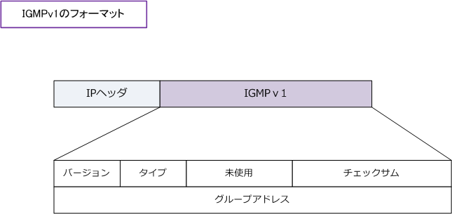
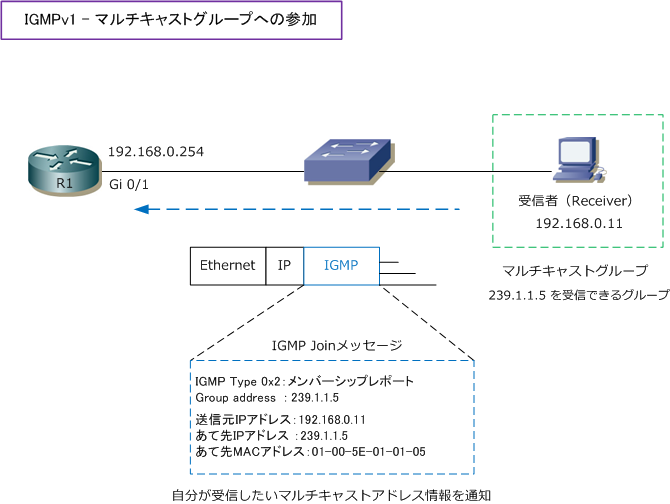
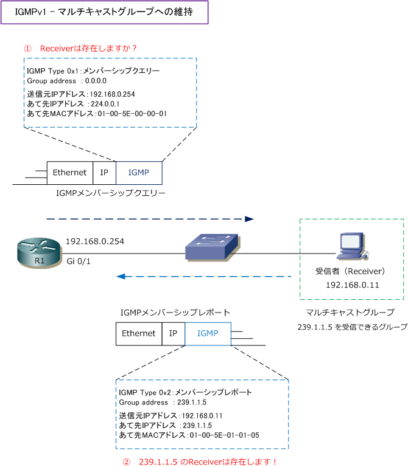
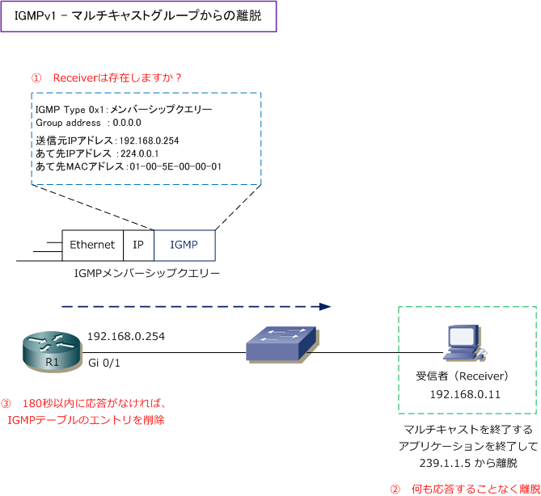

IGMPv1
IGMPv1
IGMPはIPでカプセル化されており、IPプロトコル番号は「2」です。IGMPv1のフォーマットは以下です。

| フィールド | ビット | 内容（ 値 ） |
|---|---|---|
| バージョン | 4ビット | IGMPのバージョン（ 1 ） |
| タイプ | 4ビット | メンバーシップクエリー（ 0x1 ） |
| タイプ | 4ビット | メンバーシップレポート（ 0x2 ） |
| 未使用 | 8ビット | 送信時に0に設定、受信時に無視される（ 0 ） |
| チェックサム | 16ビット | パケットの完全性を確認するために使用（ 0 ） |
| グループアドレス | 32ビット | メンバーシップクエリーの場合は（ 0 ） |
| グループアドレス | 32ビット | メンバーシップレポートの場合は（ マルチキャストグループアドレス ） |
IGMPv1 - マルチキャストグループへの参加
マルチキャストを使用するアプリケーションをインストールしたホストが、Receiverとしてマルチキャスト グループに参加するとします。Receiverは、IGMP（type 0x2：メンバーシップレポート）によりルータに マルチキャストグループの参加を通知します。この時のIGMPは「IGMP Joinメッセージ」とも言われます。
Receiverからのメンバーシップレポートを受信したルータは、自身が管理するIGMPテーブルにその情報を 登録し、そのマルチキャストグループの情報（マルチキャストアドレス）は、マルチキャストルーティング テーブルにも反映されることになります。

Ciscoルータの場合、IGMPテーブルは以下のようになっています。
R1> show ip igmp groups
IGMP Connected Group Membership Group Address Interface Uptime Expires Last Reporter 239.1.1.5 GigabitEthernet0/1 00:15:03 00:01:10 192.168.0.11
IGMPv1 - マルチキャストグループの維持
マルチキャストルータは、メンバーシップレポートを受け取ると、Receiverの存在を確認するためにも 全てのマルチキャストホストを示す224.0.0.1宛てに対してIGMPメンバーシップクエリーを送信します。 Ciscoルータの場合、60秒ごとにIGMPメンバーシップクエリーを送信します。
IGMPメンバーシップクエリーを受信したReceiverはIGMPメンバーシップレポートで応答します。この 応答は、各マルチキャストグループにつきどれか1つのReceiverがすればOKであり、ルータにとっては Receiverが1つでも存在すれば、そのセグメント上でマルチキャストパケットをフラッディングします。

IGMPv1 - マルチキャストグループの離脱
Receiverがマルチキャストのアプリケーションを終了するなどしても、IGMPv1では特に動作はしません。 つまり、ルータ側に通知することなくマルチキャストグループから離脱することになります。ルータでは 定期的（60秒毎）にIGMPメンバーシップクエリーを送信しReceiverの存在を確認しますが、180秒以内に IGMPメンバーシップレポートを受信できない場合は、ルータではIGMPテーブルのエントリを削除します。

IGMPテーブルのエントリ削除後、Gi0/1からは239.1.1.5宛てのマルチキャストパケットは転送されません。